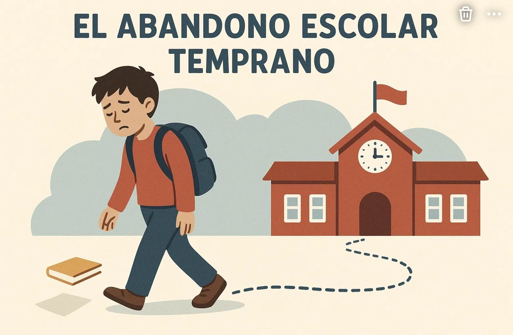
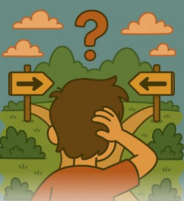
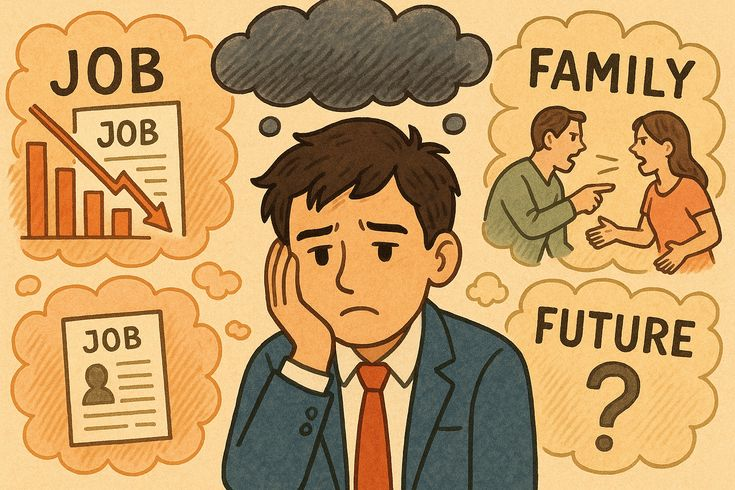

Testimonios de estudiantes

Muchos estudiantes enfrentan dificultades, pero con esfuerzo y apoyo logran continuar sus estudios, demostrando que es posible superar los obstáculos.

El abandono escolar ocurre por diversas razones como problemas económicos, falta de motivación, situaciones familiares y bajo rendimiento académico. Estas situaciones afectan directamente la continuidad de los estudiantes en la escuela.

No terminar los estudios puede generar menores oportunidades laborales, inestabilidad económica y limitaciones personales y profesionales que afectan el futuro de los jóvenes.
Muchos estudiantes enfrentan dificultades, pero con esfuerzo y apoyo logran continuar sus estudios, demostrando que es posible superar los obstáculos.

Para prevenir el abandono escolar es importante organizar el tiempo, pedir apoyo a docentes, mantener metas claras y aplicar estrategias de estudio adecuadas.

La familia y la escuela deben trabajar juntas brindando apoyo emocional, comunicación constante y seguimiento académico a los estudiantes.
Existen tutorías escolares, apoyo psicológico, becas y contactos dentro del plantel que ayudan a los estudiantes a continuar con sus estudios.